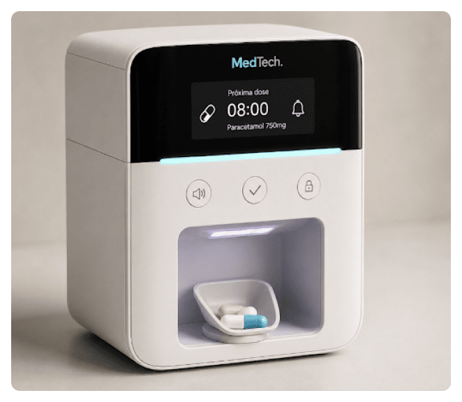

Elimine o erro
humano.
Proteja quem
você ama.
Precisão clínica aliada ao cuidado domiciliar. Gerenciamento automatizado de medicamentos projetado para evitar erros, economizar tempo e proporcionar tranquilidade total para as famílias.

"Nossa missão é preencher a lacuna entre a logística hospitalar complexa e a simplicidade necessária para o cuidado domiciliar, garantindo que cada dose seja entregue com precisão cirúrgica."
Dr. Elias Thorne — Diretor Médico, MedTech Solutions
Zero desperdício
O algoritmo de dispensação otimizado garante que nenhum comprimido seja perdido ou danificado. O sensor de inventário inteligente avisa muito antes de precisar de recarga.
100% precisão automatizada
Atuadores de grau militar e sensores de verificação óptica confirmam cada dose em relação à prescrição digital do médico.
Rastreamento em tempo real
Alertas instantâneos via sincronização criptografada na nuvem. Monitore a adesão de qualquer lugar do mundo com o app MedTech Care.
Para quem é o MedTech?
Cuidado personalizado para cada jornada médica.
Visibilidade total para as famílias.
Cuidando de um pai ou mãe à distância? O MedTech envia notificações instantâneas quando as doses são tomadas ou esquecidas, permitindo que você aja imediatamente sem precisar monitorar o tempo todo.
- Painel familiar compartilhado
- Protocolos de emergência para doses perdidas
- Pronto para videoconsultas